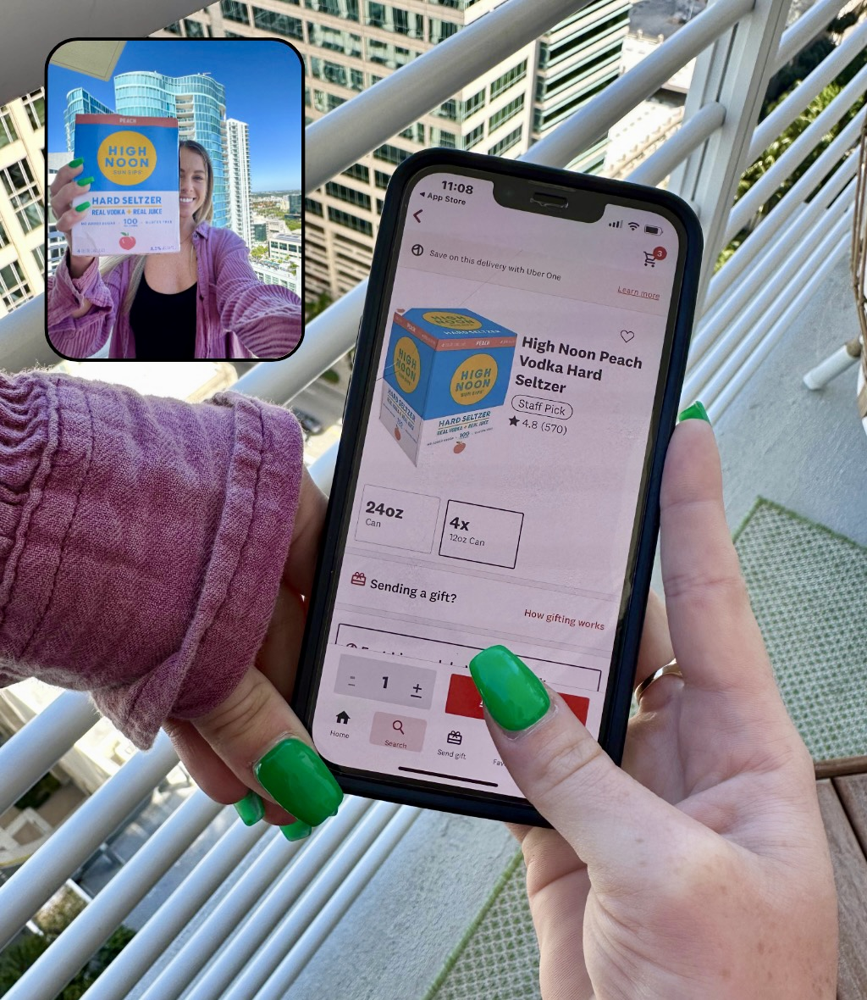

Case Study
How we built a full-funnel paid social strategy that cut Drizly's acquisition costs in half and drove a viral campaign with 15x ROAS.
Alcohol delivery app — on-demand e-commerce, acquired by Uber.
On-Demand Delivery / Alcohol E-Commerce
Meta Ads (Facebook + Instagram) & Snapchat Ads
Full-Funnel Paid Social & App Install Campaigns
The Problem
Drizly needed to scale user acquisition across paid social while keeping acquisition costs sustainable. Previous campaigns were driving installs but at inconsistent costs, with no clear full-funnel strategy connecting awareness to conversion.
The demand was there. The product-market fit was proven. But without a full-funnel architecture and a creative velocity engine, every dollar spent was working harder than it needed to.
The Strategy
Built a structured funnel from awareness through conversion. Top-of-funnel focused on reach and brand awareness with lifestyle content, mid-funnel drove engagement and consideration, bottom-funnel pushed high-intent retargeting for installs and first orders.
Expanded beyond Meta into Snapchat Ads, tapping into a younger demographic that aligned with Drizly's target audience. Optimized creative and placements per platform rather than running identical ads everywhere.
Rapid creative testing with seasonal hooks, cultural moments, and trend-jacking (holidays, game days, weekends). Kept ads feeling fresh and relevant to reduce ad fatigue and maintain low CPAs.
Launched a campaign that caught fire organically, driving a 15x return on ad spend. Leveraged UGC-style creative and shareable moments that extended reach far beyond paid impressions.
The Results
A structured strategy that turned installs into a scalable, repeatable machine.
The Creative
Native-feeling creative designed for each platform — not repurposed, but purpose-built to drive installs.

Key Takeaways
Platform matters. Snapchat wasn't an afterthought — it was a strategic play for a specific demographic. Meeting your audience where they actually are changes everything.
Creative freshness is non-negotiable. When you're spending at scale, creative fatigue is your biggest enemy. Constant iteration kept costs low and engagement high.
Full-funnel thinking scales. You can't just run conversion campaigns forever. Building awareness at the top creates a pool of warm audiences that convert cheaper at the bottom.